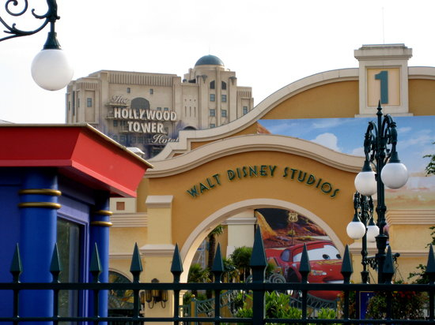
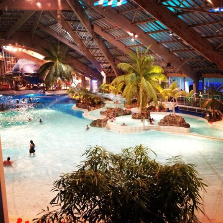
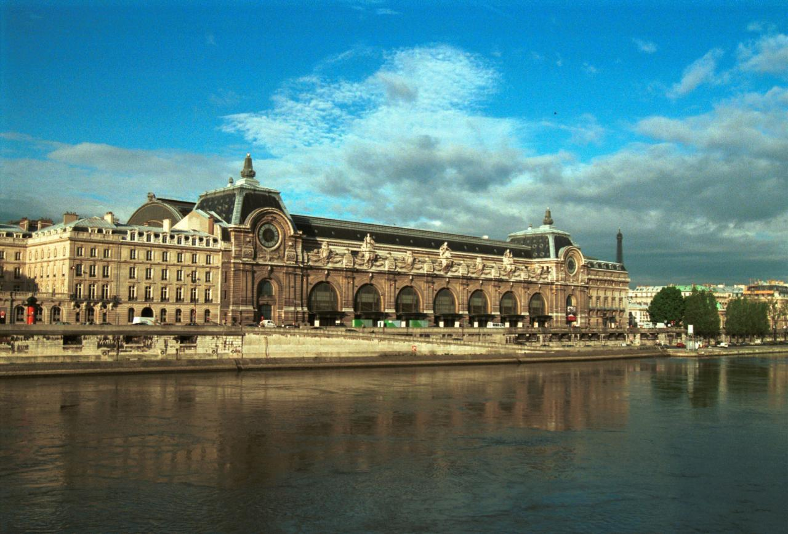
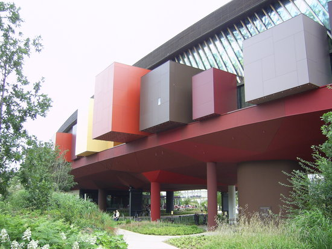
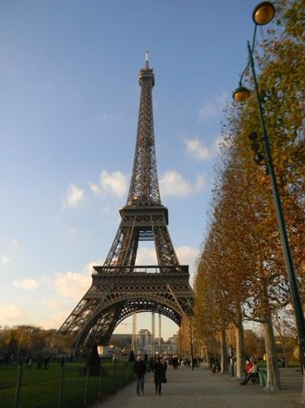
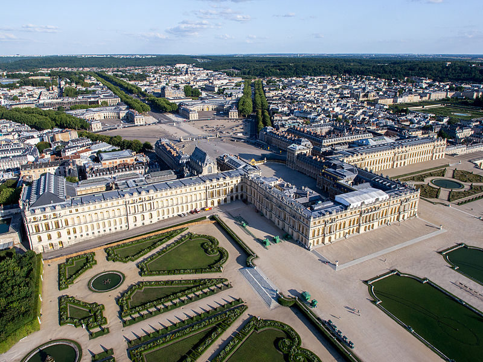

Lieux et Activités
Parcs d’attractions
Parc DisneyLand

Cinq pays («lands» dans la langue locale) se répartissent sur environ 53 ha de ce royaume de fantaisie : Main Street USA reconstitue la grand-rue d’une cité américaine du 19 e s. Frontierland évoque le Far West avec l’ancienne mine d’or de Big Thunder Mountain et un manoir hanté, Phantom Manor. Adventureland invite à l’aventure : pirates, temple brésilien, île déserte : émotion garantie. Fantasyland vous plongera dans le pays des contes de fées et Discoveryland vous fera voyager dans le futur.
AquaBoulevard

Immense parc aquatique couvert disposant d’un bassin à vagues, d’îles Jacuzzi et de toboggans géants. Autres activités d’intérieur : tennis, squash, restaurants et cinémas. Dès les premières belles journées, pelouses et plage garnies de transats ainsi qu’un minigolf vous attendent à l’extérieur.
Musées
Musée du Louvre

Le Louvre fut à travers huit siècles la demeure des rois et des empereurs. Des agrandissements successifs en ont fait le plus grand palais du monde, avec celui du Vatican. Sa renommée universelle, il la doit à son musée, écrin séculaire de chefs-d’oeuvre absolus comme « La Joconde » ou « La Vénus de Milo ». Il invente de nouvelles manières de voir et de comprendre l’art en tissant des passerelles entre le passé et le présent, la contemplation et l’action !
Musée d’Orsay

Depuis 1986, l’immense nef de l’ancienne gare d’Orsay sert d’écrin au musée d’Orsay dont les collections artistiques couvrent les périodes de 1848 à 1914, complétant celles du musée du Louvre et du musée national d’Art contemporain. Orsay présente la plus belle collection d’ oeuvres impressionnistes au monde : peinture, sculpture, arts décoratifs, dessins et photographies, marqués par les noms de Millet, Pissarro, Monet, Manet, Renoir, Toulouse-Lautrec, Cézanne, Van Gogh…
Musée du quai Branly

Inauguré en juin 2006, le bâtiment dessiné par Jean Nouvel repose sur charpente métallique – habillée de bois et de plâtre aux tons chauds – soutenue par 26 poteaux disposés au hasard comme pour rappeler les arbres d’une forêt. Un mur végétal conçu par le botaniste Patrick Blanc couvre la façade nord. Les collections rassemblent près de 300 000 objets dont 3 500 sont exposés. Les objets sont présentés selon les espaces géographiques dont ils proviennent : Océanie, Amérique, Afrique, Asie. Cinq groupes se dessinent autour de la matière : bois, fibres et tissus, terre et poterie, métal.
Sites et monuments
Tour Eiffel

Indissociable du paysage de Paris, la tour Eiffel est sans doute le monument le plus connu au monde, et peut-être, le plus visité. Cette gigantesque tour de fer, construite par Gustave Eiffel pour l’Exposition Universelle de 1889 n’eut cependant pas que des partisans lors de sa construction. Mais le succès auprès des foules de cette gigantesque construction de 300 m de haut ne s’est jamais démenti depuis l’inauguration, et le panorama qu’on y découvre est fabuleux.
Cathédrale Notre-Dame de Paris

Il y a vingt siècles que l’on prie en ce lieu : temple gallo-romain, basilique chrétienne et église romane s’y sont succédé avant l’actuelle Notre-Dame. Elle est la dernière des grandes églises à tribunes et l’une des premières à arcs-boutants ; idée novatrice, on les prolongea par un col destiné à rejeter les eaux pluviales loin des fondations : ce sont les premières gargouilles. Du haut de la tour sud, la vue s’étend sur la flèche, les arcs-boutants et l’île de la Cité sur laquelle elle est édifiée. La cathédrale Notre-Dame est l’un des édifices majeurs de Paris.
Château de Versailles

Symbole de perfection classique, le plus grand palais du monde fut l’image fastueuse d’une époque de création intense, symbole du pouvoir absolu. Le circuit des Grands Appartements comprend les pièces de réception (le salon d’Hercule, les six salons en enfilade composant le grand appartement proprement dit, deux salons symétriques consacrés à la Guerre et à la Paix, et la somptueuse Galerie des Glaces, chef-d’oeuvre décoratif restitué dans son état de 1770), la chapelle toute de blanc et or dédiée à Saint Louis, l’ appartement de la Reine, ainsi que la Galerie des Batailles. La façade sur le parc (680 m) donne sur une terrasse offrant de multiples perspectives sur les jardins ( Parc du château de Versailles).
Nature et parcs
La Seine

La Seine est un fleuve qui parcourt près de 800 km, depuis sa source sur le plateau de Langres. La Seine se jette dans la Manche près du Havre. Son bassin versant est d’une superficie d’environ 75 000 km.
Forêt de Fontainebleau

L’antique forêt de Bière fut de tout temps un magnifique terrain de chasse, à courre notamment. Aujourd’hui soigneusement entretenue (elle est divisée en 747 parcelles traitées afin de fournir les plus beaux peuplements), elle est sillonnée de sentiers balisés, créés par Denecourt puis par Colinet, permettant d’accéder aux sites les plus remarquables. La forêt réserve en outre de beaux circuits de randonnées, notamment vers les gorges de Franchard, et des points de vue sur le pays de Bière.